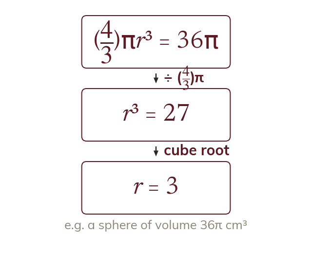

A formula becomes an equation
With one value unknown, a formula becomes an equation. Solving it gives the missing length.
Once every value in a formula is known except one, the formula is an equation in that unknown. Substituting the values and solving gives the missing length.